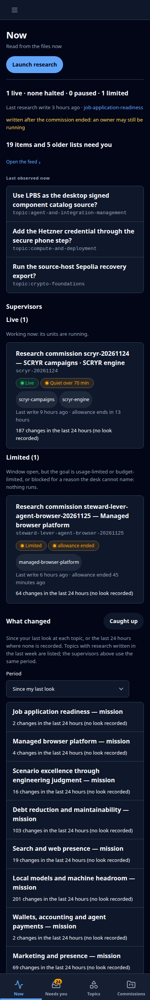

The data is excellent. The presentation is a report.
Captured from the running scenario at 390×844 (dark shown; the light default is just as flat, and is linked below). Everything below it is true; the problem is that the screen makes you read to find out whether you need to act.

Five equal sections. Nothing visually says “the system is healthy” or “one commission is stuck”.
live and limited are the same pill with a different hue.
Title, id, state, topic, last write, change count — six lines where one strip would do.
“103 changes in the last 24 hours.” What changed? The operator still has to open it.
19 items and 5 older lists at equal weight; the delivery badge is louder than the decision.
51 topics in one list, five sections open, no preview of the packet you are about to send.
60 rem centred at 1440: empty margins, no list/detail, no room for the data.
The best idea in the product — evidence for every derived value — is the smallest link on the page.
More in the written study: §2 lists twelve defects with the screen they show on. The redesign keeps every feature; it changes what leads.
A calm instrument, not a dashboard.
- 01Answer before detail.Each surface opens with its answer in a sentence and a shape; the records that prove it follow.
- 02Time is the axis.Research is movement. A lane, a sparkline, an age — never a table of nouns.
- 03State is a material.Live is a moving line; paused is held; limited hits a ceiling; halted breaks. Words and shapes carry; colour reinforces.
- 04Evidence is a surface.Every derived value has a provenance stamp; tapping opens the source, rule, time and raw value.
- 05Every action is a dispatch.The confirmation previews the exact message, its destination, and when it will be read.
The Bridge
A ship's bridge for a fleet of research commissions. Day Watch is warm paper and ink; Night Watch is graphite and signal amber. Everything is a reading, a strip or a dispatch.
job-application · managed-browser · scenario-excellence
SCRYR engine · debt reduction
experience-engineering
An instrument panel, not a dashboard. The top of the screen is a duty line — one sentence and three readings. Under it, a pulse ribbon shows every open commission as a lane of research writes: where work is happening, where it has gone quiet, and where an allowance is about to end. The ribbon is the system's shape; the strips below are the records that prove it.
| Element | What it does | Replaces |
|---|---|---|
| Pulse ribbon | 24h / 7d lanes, ticks, quiet gaps, allowance caps, a now line. | Status sentence + separate groups |
| Flight strip | Commission as a horizontal ticket: state material, title, route chips, allowance meter, last write. | Tall commission card |
| Decision ticket | Question, age, recommendation, two answers, courier stamp. | Collapsed details row |
| Read-set gauge | Charter / state / ledger / mission / operator against ceilings, with growth. | “22 KB (5,387 tokens)” |
| Evidence sheet | Source path, rule, observed time, raw value, open file. | Tiny “Why?” link |
2 live. 19 waiting.Instrument Sans for the interface, tabular numerals for every reading.IBM Plex Mono · scr yr-20261124 · 13h left
Four tabs stay: Now, Needs you, Topics, Runs. Launch is a persistent top action; Reviews and Desk live in the overflow, as today. On desktop the same destinations become a 224 px rail with a live duty summary. A ⌘K palette reaches any topic, commission, file or control — power without more tabs.
The Desk
A private correspondent's desk. The desk writes you a short, beautiful brief each time you arrive; decisions are reply slips; commissions are dossiers.
An editorial front page, not an operations console. The masthead sets the day; the lead is the one thing that most deserves your attention, written as two sentences; reply slips are decisions; the fleet ledger is the quiet status table; since your last visit is a digest. The desk becomes a correspondent that has already read everything for you.
- 01Masthead + edition. A dated front page with a one-line edition summary.
- 02Lead story. The most consequential change or blocker, with an evidence footnote.
- 03Reply slip. A perforated decision card; the recommendation printed like a reply; two reply buttons.
- 04Fleet ledger. A compact table of state, last write, allowance and a one-line note.
- 05Marginalia. Overlaps, lens outages, unreadable files as margin notes, not alarms.
The state of the research,
Thursday morning.Ivory paper, ink, one vermilion accent, a serif display, hairline rules, generous reading measure.
One commission has written past its allowance — and is still running.
Managed browser platform last wrote six hours ago, forty-five minutes after its window closed. Nothing is lost; the desk has kept the session intact for a closeout.
Read the evidence ↗13h left
over 45m
—
managed-browser · 2h
managed-browser · 4h
medical-practice-it · 9h
Two commissions overlap on managed-browser. The desk will not supervise both silently.
The Constellation
The research portfolio as a night sky. Topics are stars, commissions are orbits, decisions are beacons. Navigate by shape and relationship, then drop into ordinary lists for precision.
The constellation
A spatial model of the portfolio. Node size is open workstreams; brightness is recency; a ring is a live commission; a dashed halo is quiet; amber is a decision beacon. Edges are commissions that cover more than one topic, so overlaps become geometry instead of a separate section. A time scrubber replays the last seven days.
- 01Portfolio shape. Which topics are alive, which are drifting, which are connected by the same commission.
- 02Overlap and drift. An overlap is a visible edge; a stall is a halo that stops moving.
- 03Reviews. The map is a natural index for a portfolio review; selecting a cluster builds the review scope.
- 04Memory. It is the screen the operator will describe to someone else.
A map is slower for “answer these 19 decisions”. It needs a complete non-spatial equivalent for accessibility, zoom/pan on a phone is hostile, and it is a new interaction model to learn. Build it after the Bridge, behind a Map toggle on Topics, with the list as the default.
Which one should be the desk?
All three preserve every feature. The choice is what the desk is for: fast triage, deep reading, or spatial understanding.
| Criterion | A · Bridge | B · Desk | C · Constellation |
|---|---|---|---|
| Five-second “does anything need me?” | 5/5 · duty line + tickets | 4/5 · masthead + slips | 3/5 · beacons need reading |
| Five-second “what is moving?” | 5/5 · pulse ribbon | 4/5 · fleet ledger | 5/5 · brightness + orbits |
| Time to answer 19 decisions | 5/5 · ranked queue, one tap | 3/5 · rich but slower | 3/5 · scattered beacons |
| Reading long research | 4/5 · dossier tabs | 5/5 · reading room | 3/5 · map is not a reader |
| Phone ergonomics | 5/5 | 5/5 | 2/5 |
| Desktop use of space | 5/5 · rail + two-pane + wall | 4/5 · two-column editorial | 5/5 · full-bleed map |
| Distinctiveness / award potential | 5/5 · pulse + strips | 5/5 · editorial voice | 5/5 · spatial identity |
| Build cost | M | M–L · new type/brand | L–XL · map + a11y equivalent |
| Risk | Low–M | M | High |
Recommendation. Build A. Put B's briefing voice in “Since last look” and the idle states. Ship C's map as an optional desktop view after the core is proved. This is the rare case where the recommended option is also the lowest-risk one.
Every surface gets a job, not a skin.
The Bridge is a system of patterns, not one nice screen. Here is what each route becomes.
One sentence answers the state; the ribbon shows movement; the top decisions are ranked by consequence and age.
Filters: all, blocking, questions, notices, older, answered. Delivery is a stamp; the recommendation is one tap; the dispatch preview is exact. A visual decision can carry a captured before / composited after viewer with fidelity chips and tap-to-comment regions.
Desktop table, phone dense list, saved views: all, needs attention, quiet. Topic dossier: brief, workstreams, runs, changes.
Overview tells the story; Steer is a control rail with a destination line; Reading is a budget gauge; Files is a ledger.
Clean-start verdict at the moment of choice; a packet preview; a persistent plan bar; one clearance checklist; no command line.
Verdict stamps that can bind to a capture region, real lens states, self-tests, theme, and every research file rendered for a phone.
Same features. That is a gate, not a promise.
34 feature groups across 12 routes and 6 journeys are mapped one-for-one in the written study. The redesign may re-home a feature; it may not lose one without a keep/drop card.
- 01Live / halted / paused / limited counts; newest write; notes.
- 02Supervisor groups; topics, claim, last write, changes, allowance.
- 03Since last look / day / week; written topics; Caught up.
- 04Overlaps; prepared packets; state counts; lens outages.
- 05Unreadable files; stale, partial, offline, error states.
- 06Needs-you feed: body, options, own words, exact entry.
- 07Delivery, answered, read, reused ID, global, secret, older lists.
- 08Courier health, self-test, global switch; per-commission switch.
- 09Say, wind down, pause, resume, stop, discard, re-send stance.
- 10Read timing, entry limit, operator log, unparsed headings.
- 11Enable steering; refused control reason; manual keystrokes.
- 12Topics, cards, order, notes, emphasis, quotes + source.
- 13Allowance, models, slug, form persistence, read-first.
- 14Preflight size gates, blockers + recommendation, quiet folded.
- 15Prepared / unknown packets, manual messages, progress.
- 16Read-set sizes and bloat; files; reviews; verdicts; Desk.
- 17Evidence for every derived value; API sentences verbatim.
The gate. After each phase, EX8 diffs the served inventory against this list. A finding such as “the launch map disappeared” or “the older-lists count vanished” becomes a decision card, not a silent regression. The full 34-row map is in PROPOSAL.md §9.
Built by the pipeline it is asking for.
This study is the first customer of the experience-engineering capabilities: capture, inventory, compositing, region feedback, critic, contracts and one verdict.
12 routes × 2 sizes × 2 themes, plus the six journey states. The captures on this page are the interim baseline; the bundle replaces them.
capturedEvery route, action and component is inventoried before the change and diffed after. A loss becomes a keep/drop card.
before / afterEdit the frozen page's outline; composite unchanged regions; render changed regions with real RCL components fed captured data.
compositedThe operator taps a region, writes one sentence; the comment binds to the outline node and routes to the owning task.
region ID + textScore every built screen at 390 and 1440, light and dark: stacked actions, overflow, contrast, 44 px targets, crowded nav.
ranked findingsBottomNav max 4; DecisionTicket max 2 options + own words; PulseRibbon max 6 lanes; one action row, one primary.
dev + lint + storyThe new primitives are built in the RCL studio and adopted fleet-wide; tabs, dropdowns, nav and action bars stay shared.
RCL assets--phases experience becomes the redesign gate; not-evaluated never passes; false passes are measured.
one verdictA visual decision shows the before/after viewer and returns the region ID with the operator's words; a review can bind a verdict to a region; point-and-correct works on the desk itself.
region answerDecision first; today beside the proposal; one card per option; what approval does; no answer is a real choice; fidelity labels.
methodSix phases, about eight weeks
- 01Five-second test: “does anything need me?” and “what is moving?” 5/5; “what changed?” ≥ 4/5.
- 02Median time to answer one needs-you item < 30 s; launch 3 topics with defaults < 60 s.
- 03Zero unexplained critic findings at 390/1440, light/dark; AA verified; no overflow at 320–1440.
- 04100% of the EX8 inventory preserved, or a keep/drop card for every difference.
- 05Files remain the state. No database, no new authoritative record.
- 06No write is one tap; every outward action is confirmed with the exact text.
- 07The desk never enters a supervisor conversation; wind-down is still an operator-file entry.
- 08Unknown stays unknown; optional lenses down only make their fields unknown.
Four taste calls. No answer is a real answer.
The current desk keeps working while you decide. Nothing here changes a commission, a file or a supervisor.
A · The Bridge (recommended) · B · The Desk · C · The Constellation as the default. C can ship as an optional view under any choice.
The Bridge is designed light-first (“Day Watch”) with a full “Night Watch” dark mode. Should the desk open light — calmer, paper — or keep the current dark habit?
Both preserve every feature. Is the time-axis ribbon the hero, or should the top of Now be the ranked decision queue with the ribbon below it?
The proposal works inside the current kit, but a pulse mark and a display face are what make it award-winning rather than merely clean.